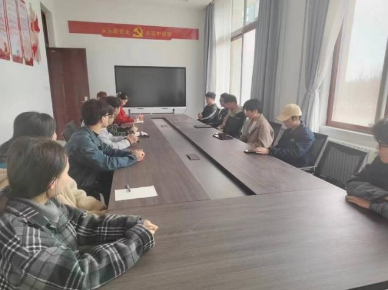
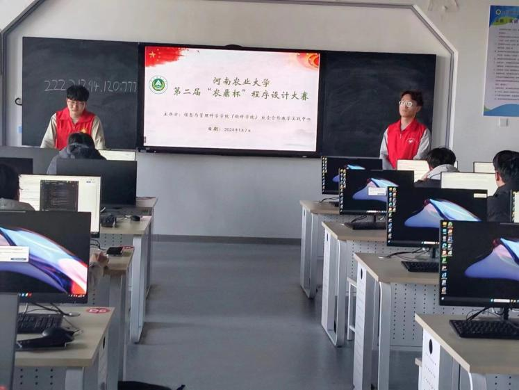

部门
办公室
工作内容
日常例会
- 划学科竞赛，如“农鼎杯”程序设计大赛、“用友杯”、“蓝桥杯”等竞赛活动。
- 完善规章制度，做好A栋实验室管理和维护工作。
招募要求:
- 有强烈的责任心、执行力，较强的工作意识，管理、统筹能力和协作意识。
- 能够做到严于律己，能够正确处理学习和工作的关系。
- 对办公软件有一定的了解，有良好的学习能力，较好掌握办公操作软件。
招新岗位
| 岗位 | 数量 |
|---|---|
| 见习干事 | 6 |
宣统部
介绍
作为大赛活动和消息接收的第一线，我们肩负着宣传推广、海报制作、推文撰写、约稿访谈、视频策划与剪辑等重要任务，致力于精心打造线上和线下宣传工作。
招募要求:
- 具备好的文字编写和表达能力，熟练掌握办公软件。
- 具有出色的活动策划与组织实施能力，有丰富的想象力。
- 热爱拍摄与视频剪辑，可以简单制作视频，掌握一定的摄影技巧。
招新岗位
| 岗位 | 数量 |
|---|---|
| 文案策划 | 4 |
| 摄影与剪辑 | 4 |
| 运营员 | 1 |
科创部
工作内容
'农鼎杯'比赛现场- 织开展竞赛集训，对竞赛知识及算法分析等进行讲解。
- 筹备创建天梯赛、ACM团队。
- 分方向重点有针对性的培养综合特色学生。
- 组织开展学习小组，进行挑战杯、互联网+等创新项目的孵化、以及软件开发知识学习等等。
招募要求:
- 热爱开发编程，具备一定代码逻辑和编程能力。
- 具有钻研精神和学习能力，掌握一定的计算机知识。
- 积极向上，阳光开朗
招新岗位
| 岗位 | 数量 |
|---|---|
| 算法人员 | 8 |
| 开发人员 | 6 |